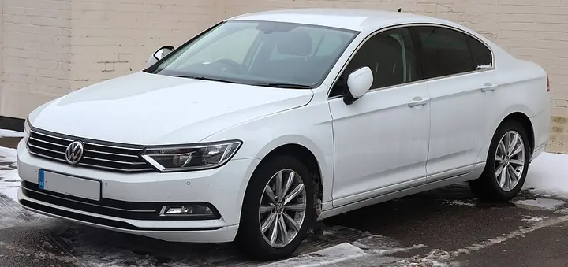
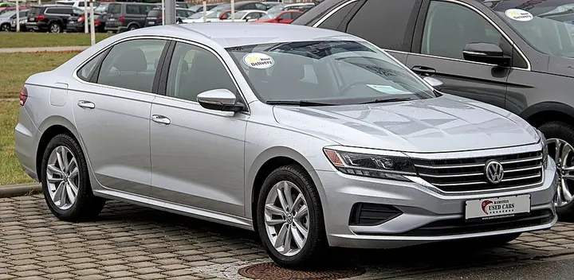
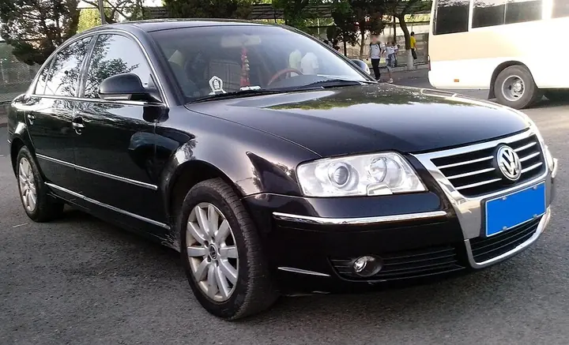
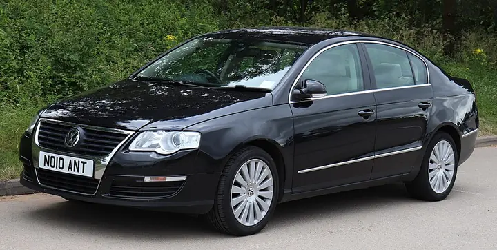
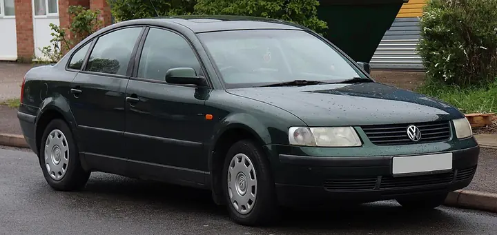
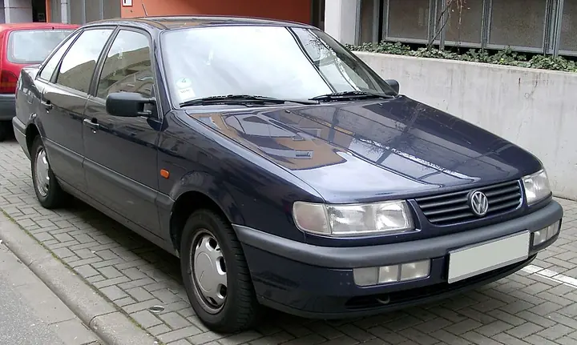
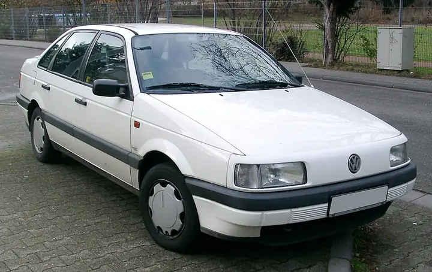
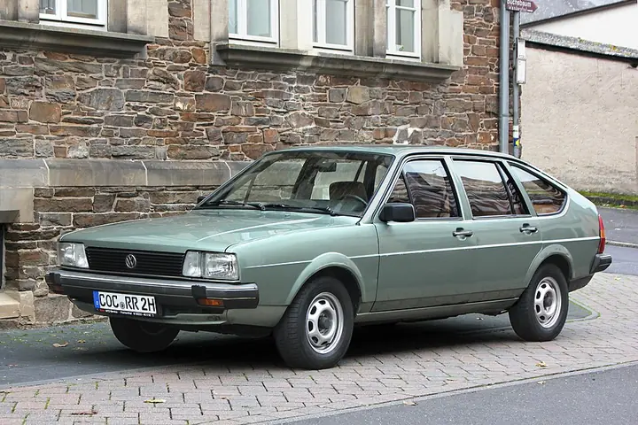
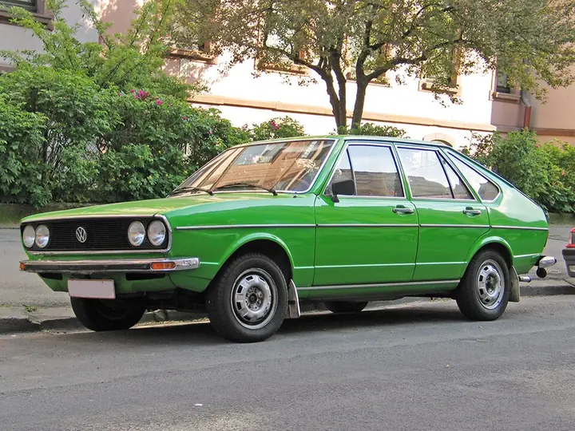

Volkswagen Passat
B9 (Typ 3J; 2023) · 2023–present
Abstract
This generation of the Volkswagen Passat is a large family car (D), built December 2023 – present in Slovakia: Bratislava. Body styles: 5-door estate. Layout: Front-engine, front-wheel-drive. This generation has its own article: Volkswagen Passat (B9).

_%E2%80%93_f_18052025.jpg){kind=link}
1Specifications
| Production | December 2023 – present |
|---|---|
| Assembly | Slovakia: Bratislava |
| Class | Large family car (D) |
| Body style | 5-door estate |
| Layout | Front-engine, front-wheel-driveFront-engine, all-wheel-drive |
| Platform | Volkswagen Group MQB Evo |
| Engine | Petrol:1.5 L TSI I4 mild hybrid2.0 L TSI I4Petrol plug-in hybrid:1.5 L TSI I4 (eHybrid)Diesel:2.0 L TDI I4 |
| Transmission | 6-speed DSG (eHybrid)7-speed DSG |
| Battery | 25.7 kWh Li-NMC (eHybrid) |
| Electric range | 126-131 km (eHybrid) |
| Wheelbase | 2841 mm |
| Length | 4917 mm |
| Width | 1852 mm |
| Height | 1506 mm |
| Weight | 1572–1855 kg |
| Related | Škoda Superb Mk4Volkswagen Magotan (B9)Volkswagen Passat Pro |
| Predecessor | Volkswagen Passat (B8) |
2Versions
- Volkswagen Magotan (China)
- Volkswagen Passat Pro (China)
- Passat ePro
3Previous generations















.JPG){kind=link}


4Generation by generation
Length +17% from the first to the last
B1 (Type 32; 1973) 19734,190 mm
B2 (Type 32B; 1981) 19814,435 mm
B3 and B4 (Typ 35i; 1988) 19884,575 mm
1993 facelift (Passat B4) 19934,610 mm
B5 (Typ 3B, 1996) and B5.5 (3BG… 19964,676 mm
B6 (Typ 3C; 2005) and B7 20054,780 mm
2010 facelift (Passat B7) 20054,780 mm
Passat Lingyu (China, 2005–2011) 20054,789 mm
B8 (Typ 3G; 2015) 20144,767 mm
B9 (Typ 3J; 2023) 20234,917 mm
Weight +15% from the first to the last
B5 (Typ 3B, 1996) and B5.5 (3BG… 19961,365 kg
Passat Lingyu (China, 2005–2011) 20051,426 kg
B8 (Typ 3G; 2015) 20141,367 kg
B9 (Typ 3J; 2023) 20231,572 kg